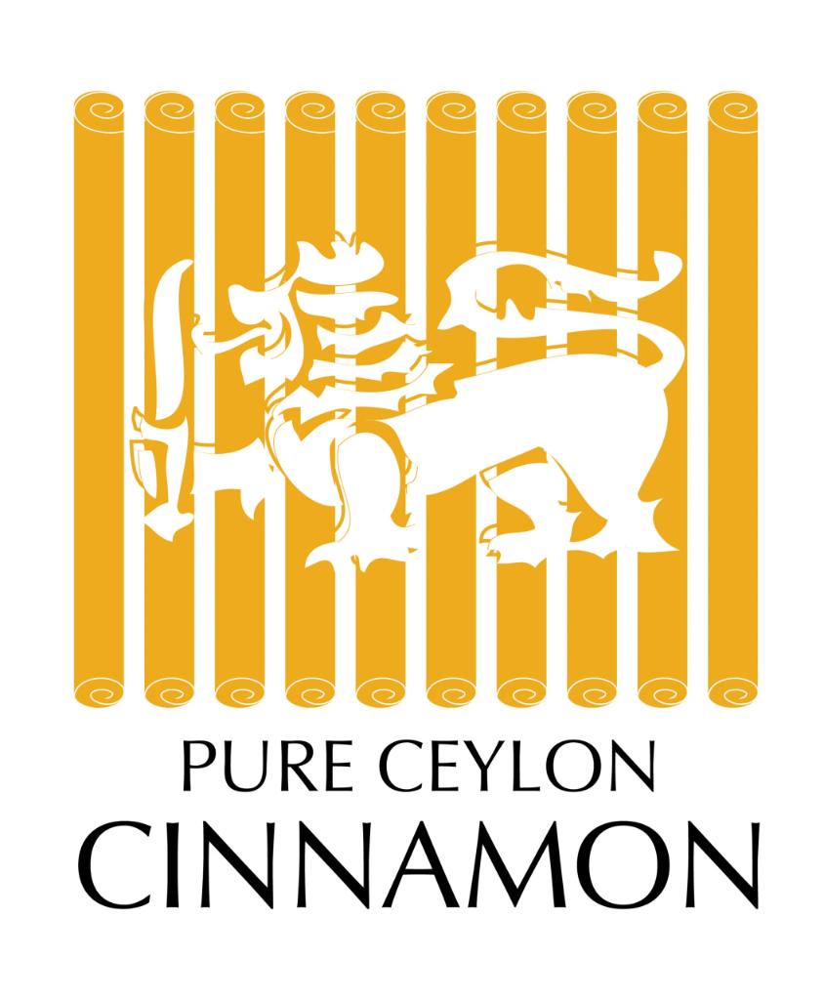

Every bespoke vessel of grá CEYLON tea, wild-harvested cinnamon quill, and botanical elixir carries a unique serial provenance identifier on its tamper-evident seal. Enter your code below to retrieve its immutable certificate of authenticity, batch lab testing, and harvest origin.
Enter the unique serial code printed on the security seal or underside label of your grá CEYLON vessel.
Printed on the golden holographic tamper-evident tape across the natural cork closure or tube lid.
Located on the embossed metallic foil label adhered to the underside of the artisanal tin canister.
Inscribed on the numbered parchment neck-tag and embossed base security decal.
Cryptographically verifying harvest record, laboratory assay, and single-estate chain of custody.


Cinnamomum verum (Lauraceae)
Why our single-estate treasures carry individual digital authenticity credentials.
Zero middlemen or auction-floor blending. Every harvest batch is drawn exclusively from named generational family estates in Sri Lanka.
Authentic Ceylon products certified under the official Geographic Indication (GI) and the Lion Logo guidelines of Sri Lanka.
True Ceylon Cinnamon (Cinnamomum verum) naturally contains less than 0.004% coumarin, making it safe for daily wellness regimens.
10% of every vessel purchase goes directly towards healthcare and children’s educational trusts in our highland plucker villages.
Everything you need to know about our packaging security, batch verification, and archival certificates.